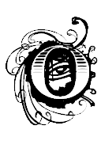

ng Markoff cố gắng gặp Đại sứ ngay sau khi cuộc họp kết thúc, thế nhưng H. Eng đã thông báo cho ông ta rằng Đại sứ Sedgewick đã cho D. Marnin đi cùng tới gặp một nhà sư mới tìm đến gặp người Mỹ để xin được hưởng quy chế tị nạn chính trị. Chiều hôm trước, vị khách mới này của Đại sứ quán đã liều mạng xông bừa vào khu lãnh sự. D. Marnin được gọi tới để chứng kiến và xác minh thân thế của anh ta. Khi ông Đại sứ nghe được tin này, ông ta cảm thấy như cuối cùng thì vận may cũng đã đến với ông ta. Với ông ta sự xuất hiện của vị khách đặc biệt này dường như là của trời cho và bởi vì như chính ông ta đã câu được một con cá to nhất - Hòa thượng Thích Trí Bình.
Với một nụ cười hớn hở trên môi, Đại sứ Sedgewick lao thẳng vào căn phòng dưới tầng trệt nơi Bình đang ẩn náu. Ông ta chìa tay ra chào, còn vị Hòa thượng lại giật lùi lại một cách bối rối và thận trọng. Thay vì đưa tay ra bắt, sư Bình lại chắp hai lòng bàn tay trước ngực và cúi đầu chào theo kiểu chào cổ điển của Phật giáo. Bởi vì anh ta từng nói đến cả trăm bài thuyết pháp chỉ trích hành vi của người Mỹ ở đất nước mình - như những vụ cưỡng dâm, gây tàn phế, trộm cắp đều gây ra bởi đám người Mỹ “mũi lõ” - cho nên việc anh ta tỏ thái độ rụt rè cẩn trọng trước sự hoan hỉ của nhân vật quyền lực nhất trong đám mũi lõ cũng là điều dễ hiểu. Dĩ nhiên là anh ta không biết rằng Đại sứ Sedgewick là người duy nhất chẳng biết chút gì về những chuyện tầm phào mà người ta vẫn đồn đại về tư tưởng chống Mỹ của anh ta cho nên ông Đại sứ chẳng những không coi anh ta là kẻ thù của nước Mỹ mà còn coi anh ta như một đồng minh thân cận trong cuộc chiến lật đổ Ngô Đình Diệm.
Hôm đó là một ngày có toàn những chuyện đen đủi. D. Marnin vừa về đến nhà vào buổi tối thì cũng là lúc có tiếng gõ cửa vội vã vang lên.
- Claudio - anh kêu lên sung sướng - ông bạn của tôi ơi, anh vào nhà đi nào.
D. Marnin rót cho mỗi người một ly rượu Scotch và mở hộp đậu phộng để ra trước mặt. Họ ngồi đối diện với nhau trong khi D. Marnin ngồi lên chiếc ghế bành còn Claudio lại ngồi ngả người mệt mỏi trên đi văng vừa uống rượu, vừa nhằn đậu phộng.
- Tôi cũng dám chắc là cậu chẳng thể giúp tôi việc chó chết này được - Claudio nói - nhưng tôi đang ở trong tình trạng là tôi phải làm tất cả những gì có thể để thoát ra khỏi hoàn eảnh này.
- Anh đang nói về cái gì cơ? Có chuyện gì không ổn sao?
- H m... cũng phải thú thực với cậu là tôi đang bị kẹt. Tôi phải làm sao đó để thu hồi thật nhanh một số tiền mặt rất lớn. Hoặc là như thế hoặc là phải thuyết phục được một số nhân vật có tiếng tăm không hay lắm rằng họ không cần thiết phải bắt tôi làm như thế.
- Anh có thể lấy bất cứ cái gì mà tôi có anh Claudio ạ - D. Marnin trả lời thành thật.
- Cậu thì có cái gì chứ?
- Hãy cho tôi một vài ngày tôi sẽ thu xếp được khoảng mười hay mười lăm ngàn đô-la tiền mặt gì đó. Còn nếu anh lấy bằng xéc thì tôi có thể đưa cho anh ngay bây giờ.
Claudio mỉm cười một cách cay độc.
- Ngần đấy chỉ đủ cho anh thôi, anh bạn ạ. Nhưng anh không thể hiểu hết mọi chuyện đâu. Tôi cần khoảng năm mươi đến một trăm lần con số đó kia. Mà tôi lại cần nó trước thứ sáu này.
- Nhưng tôi đã nghĩ là tất cả công việc làm ăn của anh đang rất trôi chảy kia mà.
- Đúng thế, nó thì vẫn trôi chảy. Theo tính toán của chúng tôi hôm thứ Sáu tuần trước, trong thời gian sáu tháng nữa chúng tôi có thể nhân đôi số tiền của chúng tôi. Dĩ nhiên là điều này còn phụ thuộc vào việc người Mỹ các anh không can dự vào nữa - một giả thiết mà chẳng ai nghi ngờ là nó sẽ xảy ra. Nhưng bây giờ thì chuyện đó là quá thừa rồi.
- Anh không cho là chúng tôi cũng đã đầu tư tất cả vào đây và rồi đột nhiên chúng tôi bỏ đi mà chẳng cần một cái gì đấy chứ?
- Điều không may là, những ngưòi cộng tác làm ăn với chúng tôi không biết nghĩ là gì cả, họ chỉ sẵn sàng hành động thôi.
- Tại sao thế?
- Có đến năm hay sáu lý do khác nhau. Thế nhưng lý do quan trọng nhất là Chương trình nhập khẩu hàng hóa CIP. Các anh chuẩn bị cắt bỏ các khoản cho vay này. Không có chương trình CIP, đất nước này sẽ lâm vào khủng hoảng trầm trọng. Hơn thế nữa, không có chương trình CIP, tất cả chúng tôi cũng sẽ phá sản.
Trong thực tế, Đại sứ quán không mong muốn người Việt Nam phản ứng ngay tức khắc với lệnh cắt viện trợ mà chưa từng được công bố này. Điều này vẫn được coi là “thông tin nội bộ” và được bảo mật rất cao.
- Mấy ông bạn của anh chỉ đang cường điệu lên thôi - D. Marnin nói - Không cần phải hốt hoảng đâu. Các chuyến hàng sẽ chỉ bị đình lại, chỉ bị đình lại thôi. Chưa hề có một quyết định nào về việc hủy bỏ chương trình hỗ trợ nhập khẩu hàng hóa cả. Lâu nhất là chỉ trong từ ba đến bốn tháng nữa sẽ có vài trăm triệu đô la từ các kênh cung cấp sẽ được chuyển vào cho chương trình CIP này thôi. Không có gì phải lo ngại cả đâu.
- Không còn gì phải lo ngại cả ư! Hãy nói điều đó vói mẹ tôi khi họ đã quẳng tôi xuống sông Sài Gòn cho cá nó xơi rồi ấy ông ạ. Cậu và đám người Mỹ các cậu đều không hiểu là cậu đang ngồi trên cái cứt khô gì đâu khi mà nó động đến vấn đề kinh tế. Thị trường chỉ quan tâm đến những ý định của các cậu thôi. Theo cách đánh giá từ những người của chúng tôi, các cậu chuẩn bị rút mạnh tấm thảm trải dưói chân ông Diệm và họ hoàn toàn không hiểu sao lại thế. Để làm gì mới được chứ? Có một thứ mà thị trường không bao giờ muốn đó là sự mất ổn định. Tại sao mấy người bọn tôi lại phải bỏ lại cả đống tài sản của mình ở Sài Gòn để cho chúng trở nên vô dụng một khi Việt Cộng tiến được xuống đây trong khi ấy họ có thể lấy lại số tài sản đó nếu họ có thể tái đầu tư vào bất cứ cái gì ở Hồng Kông hay ở Băng Cốc. Và dù sao thì cuộc đảo chính sẽ sớm nổ ra trong năm nay thôi.
- Không có ai đang rút tấm thảm dưới chân ai cả đâu - D. Marnin cố cãi - và nếu như anh đang kiếm cái kiểu tiền mà anh đang nói đến ấy thì tôi cũng không hiểu vì sao những người bạn của anh lại cảm thấy lo ngại chứ?
Claudio nhìn chằm chằm vào D. Marnin như không thể tha thứ được.
- Tôi hiểu rồi, tôi sẽ phải kể nó cho cậu nghe bằng những từ ngữ đơn giản nhất nhé. - anh ta nói - Mấy tay ba Tàu là những tên chơi bạc đại tài. Điều này có nghĩa là khi có một cơ hội vô tình lướt qua, giống như việc Hoa Kỳ quyết tâm theo đuổi chính sách đô hộ ở miền đất này, họ sẽ cùng chơi vào đây bằng tất cả mọi giá. Họ nghĩ là sẽ chẳng có gì bằng việc vay một triệu đô-la với lãi suất khoảng 6,4% để đầu tư vào việc xây dựng một nhà máy sản xuất thuốc lá bởi vì nhà máy đó có thể giúp họ kiếm được nửa triệu đô-la ngay trong năm đầu tiên mới bước vào sản xuất. Số tiền đó đủ để họ trả tiền lãi và kiếm được khoảng một trăm ngàn đô la tiền lời, một vụ đầu tư gần như chẳng bằng cái gì ngoài một chút hợp tác hai bên.
- Tôi thấy có vẻ như làm ăn vậy cũng kiếm được đấy chứ - D. Marnin thật thà nhận xét.
- Đúng vậy. Đặc biệt là vì họ vay tiền để chống lại những mối hợp tác tương tự ở ba nước khác nhau - có thể là ở đây và ở Băng Cốc, hoặc là Hồng Kông. Hoặc có thể là ở Singapore hay ở Malaysia hay ở bất cứ nơi nào khác. Chừng nào người Mỹ các cậu còn ở đây, những người chủ nợ của họ còn đáng yêu lắm - vậy nên họ sẽ không quá mệt nhọc để tìm hiểu xem nguồn vốn đó đến từ đâu. Nhưng nếu khi các cậu đã rút đi rồi, hoặc chỉ có vẻ như một ngày nào đó các cậu sẽ rút đi thì toàn bộ mọi thứ sẽ thay đổi. Những người chủ nợ sẽ bắt đầu xem xét. Vì thế một cái nhà máy sản xuất thuốc lá mới tuần trước có trị giá trên hai triệu đô-la mà có thể sử dụng làm tài sản để thế chấp vay thêm mười triệu đô-la khác để sử dụng cho việc xây dựng một dây truyền sản xuất đồ thủy tinh cao cấp hay hàng chục nhà máy nữa, ngày nay đã trở thành một mạng lưới các tiêu sản. Cuối cùng cậu sẽ không thể bỏ tất cả chúng vào trong va ly rồi mang nó đi khỏi đây được.
- Nhưng mà các anh vẫn có thể kiếm được khối tiền đấy thôi.
- Cuối tuần trước, tất cả tiền vốn của chúng tôi đã đạt mức cao nhất. Chúng tôi đã có thể thanh toán mọi nợ nần và rời bỏ mảnh đất này với một món lời thấp nhất cũng là khoảng mười triệu đô-la. Chỉ một năm nữa thôi, con số này ít nhất cũng phải đạt được khoảng mười lăm triệu đô-la hoặc là gần hai mươi triệu đô-la. Đấy là khi có một thị trường. Ngày hôm nay, bởi vì không có thị trường nào hết, tất cả tài sản của chúng tôi chỉ còn là đống cứt... - còn tồi hơn cả cứt ấy chứ vì ít ra thì cứt còn có thể làm phân bón được. Các chủ nợ của chúng tôi, những người cho vay theo tuần chứ không phải theo năm đều muốn lấy tiền về - đến những xu cuối cùng ngay tức khắc. Và gã đầu tiên sẽ bị họ đập vỡ chân là thằng cha đứng đầu cả nhóm mà đó lại là cái thằng tôi chứ. Và tất cả cũng chỉ bởi vì cái ông Sedgewick thích châm chọc của các cậu quyết định cướp quả bóng trong tay ông Diệm mà vứt đi thôi.
- Tôi nghe như thể những gì cậu nói rằng nếu chúng tôi quá thờ ơ với thị trường tài chính thì tự nó sẽ tạo nên những áp lực với Chính phủ Việt Nam Cộng hòa và đó cũng chính là những gì mà ông Sedgewick đang mong muốn.
- Cậu đừng có nhầm lẫn như thế. Chính sách này sẽ không chỉ lấy đi mấy quả trứng vàng thôi đâu. Nó sẽ còn giết luôn cả con ngỗng mẹ nữa đấy. Lý do khiến cho mấy viên tướng đó không thể tự quyết định chống lại Ngô Đình Diệm hai tuần trước đây là vì những người vẫn trả phụ cấp cho lối sống của họ, những người còn hiểu họ hơn cả má của họ nữa nhận thấy là mấy tay này chẳng thể điều hành nổi một quầy bán bánh mì trên phố chứ chưa nói gì đến một đất nước. Ông Diệm có thể có những sai lầm nhưng so vói mấy tay này thì có thể gọi ông ta giống như cách gọi của Phó Tổng thống Johnson là Winston Churchill của Châu Á. Cứ tin tôi đi, nếu như cậu sẽ đầu tư tiền của cậu vào đất nước này, cậu sẽ muốn nó được điều hành bởi Ngô Đình Diệm, người chẳng bao giờ quên một cái gì cả, còn hơn là nó được điều hành bởi tướng Minh “lớn”, người còn quên mở cả khóa quần lúc đi tè vào sáng nay.
- Tôi rất thông cảm với anh - D. Marnin nói - anh có một thửa ruộng quá rắn để cuốc cho hết. Đại sứ Sedgewick không phải là hạng người dễ bị lay chuyển đâu. Cánh thương nhân địa phương nên gây thêm áp lực với ông Diệm và ông Nhu để họ đầu hàng đi.
- Hai anh em họ quá ư cố chấp đấy. Điều đó sẽ không bao giờ xảy ra ít nhất là cho đến lúc đã quá muộn rồi. Các anh đã quá may mắn được một lần rồi. Thiếu chút nữa các anh đã đẩy mảnh đất này vào tay mấy tên tướng tá bất tài rồi. Nhưng lần này các anh sẽ không còn gặp may nữa đâu.
- Vậy theo anh tôi có thể làm được gì chứ?
- Hãy trình bày với ông Sedgewick khờ khạo ấy rằng nếu ông ta có bất cứ ý tưởng nào cho là ông ấy có thể từ từ cắt viện trợ cho chương trình CIP để ngày càng có nhiều áp lực hơn từ phía các nhà đầu cơ đối với Chính phủ Việt Nam Cộng hòa để bắt họ phải khấu đầu lạy tạ xin thua thì ông ấy bị điên thật rồi. Trong thành phố này chẳng có gì gọi là bí mật hết. Tất cả những gì mà ông ấy đang làm thực ra là hủy hoại cái thị trường mà cộng đồng các thương nhân đang cố nuôi cho nó sống. Không phải là ông ta đang vắt bỏ mỡ ra khỏi cái mảnh đất này mà chính là ông ta đang hủy hoại sự tồn tại của nó. Nếu không có thị trường, tất cả mọi thứ sẽ bị bay hơi hết và cả miếng ăn của tôi nữa, Entiende?
°
° °
Lily đã đứng đợi ở đó khi anh vừa mở cửa bước vào, cô mặc chiếc áo ngủ xuềnh xoàng màu hồng. Thế nhưng thay vì đón anh bằng một nụ hôn thật dài, thật êm và vòng tay âu yếm ôm chặt quanh cổ anh, cô nhìn anh mà quở mắng rằng cô đã chẳng gọi điện cho anh một giờ trước đó vậy mà anh vẫn còn đến muộn hơn gần hai mươi phút.
- Nếu anh chán em rồi - Lily nói - anh chỉ việc nói ra là xong.
- Anh thực tình là không muốn vậy. Anh Claudio bất ngờ nghé thăm vói một số rắc rối nên anh phải nói chuyện vói anh ấy thôi.
- Claudio, cái gì mà Claudio chứ! Em nào có quan tâm gì đến Claudio nào chứ? Nếu anh cảm thấy ông bạn quý báu Claudio của anh còn quan trọng hơn em, anh có thể quay lại, bước xuống dưới kia và ra khỏi đời em đi.
- Thôi nào, em yêu. Anh xin lỗi vì anh đã đến muộn, thôi nào... - anh cố gắng xoa dịu sự bực tức của cô bằng một nụ hôn nồng nàn - hãy ngoan nào em yêu.
- Anh còn dám cưng nựng em nữa hay sao! Nếu với anh em không dễ thương thì tại sao anh không đi chỗ khác đi? Có thể đến với một trong vô số các cô gái nhảy ở trên đường Tự Do ấy, cô ta còn đáng yêu hơn nhiều.
- Thôi đi em, em đừng hành hạ anh nữa có được không? ngày hôm nay là quá đủ với anh rồi đấy...
- Chỉ có anh mới có một ngày mệt nhọc thôi hay sao? Thế anh cảm thấy em là người thế nào chứ?... H..u... Ngày hôm qua em còn là một triệu phú - nhờ vào bản thân mình. Đến hôm nay em bỗng là một đứa ăn mày - nhờ vào cái ông Đại sứ đáng nguyền rủa của anh đấy.
- Này Lily, em đang nói đến cái quái quỷ gì thế?
- Trước lúc ông ta đến đây, mọi thứ đều rất tuyệt vời. Người ta đều có thể làm ăn được... lần đầu tiên bọn trẻ con được đi đến trường... những tòa nhà mới vẫn mọc lên ở khắp nơi. Chỉ lúc sáng nay thôi em thức dậy và hát véo von như một con chim đang đón chào một ngày mới ở phía trước. Em không phải làm gì nhiều ngoài việc đi mát-xa, đi mỹ viện và chờ đợi một đêm nữa được yêu anh trên chiếc giường này. Và cái gì đã xảy ra nữa chứ? Trước lúc em bước vào cửa hiệu làm đầu, em bỗng nhận ra là mình sẽ mất tất cả mọi thứ - điền trang, nhà cửa và cả cái giường mà em đang ngủ.
- Nhưng anh nghĩ là việc ở trang trại đang rất suôn sẻ cơ mà.
- Nó chỉ đã suôn sẻ thôi. Mới hai ngày trước đây, em vừa ký một hợp đồng cung cấp trứng, thịt gà và thịt lợn cho căn cứ quân sự ở sân bay Biên Hòa với cái giá cao hơn trước tới 40%.
- Vậy thì chuyện gì xảy ra thế?
Cô ném mình lên giường rồi bật khóc tức tưởi. Mặc dù cô đang thổn thức, anh vẫn không thể không nhìn lên đường cong hoàn hảo trên hông cô.
- Mấy tay ba Tàu đòi thanh toán món nợ - cô nói trong tiếng nấc nức nở - họ đòi tất cả tiền nợ.
- Em nợ họ tiền sao?
- Dĩ nhiên là em phải nợ rồi. Anh sẽ không thể làm ăn mà không bị dính tí nợ nần nào hết. Thế anh nghĩ là Chúa đã sáng tạo ra các ngân hàng và những chủ nợ để làm cái gì chứ?
- Anh có thể đưa cho em tất cả những gì mà anh có.
Cô gạt nước mắt rồi hỏi
- Nhưng anh thì có được bao nhiêu kia chứ?
- Ừ,... khoảng mười lăm hay mười sáu ngàn đô-la gì đó.
- Em cần khoảng mười lần như thế cơ. Ôi... h...u... em biết làm thế nào đây.
- Nhưng em có biết tại sao mấy tay ba Tàu đó lại đòi nợ vào lúc này không?
- Biết, em biết quá đi chứ! Tất cả mọi người ở Sài Gòn này đều biết cả! Họ đều sợ là ông Sedgevvick sẽ lật đổ Ngô Đình Diệm và trao đất nước này cho mấy tay tướng lĩnh bất tài đó rồi sau đấy - các anh sẽ bỏ đi luôn...
- Ôi,... Lily...Lily ơi đấy không phải là sự thực đâu...
- H..u... H..u... lại không a a...à! Đi đi, đi khỏi đây di, cả anh và tay Sedgewick của anh nữa tất cả người Mỹ các anh đi khỏi đây đi và để cho chúng tôi yên.